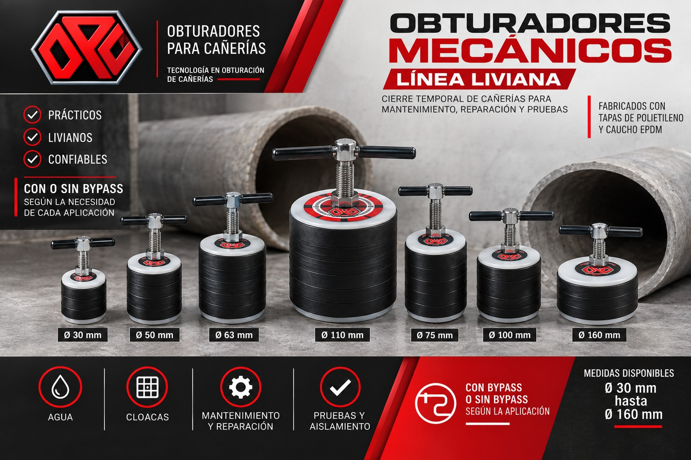
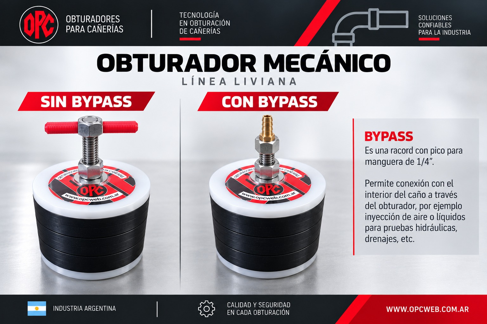
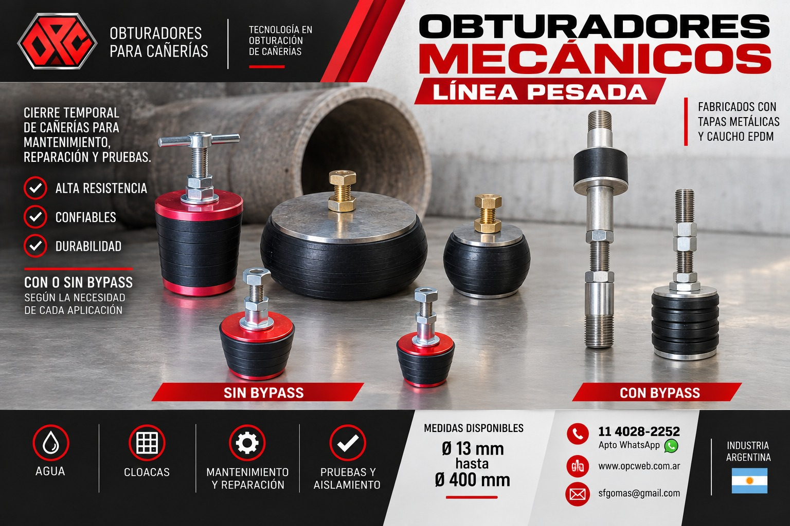
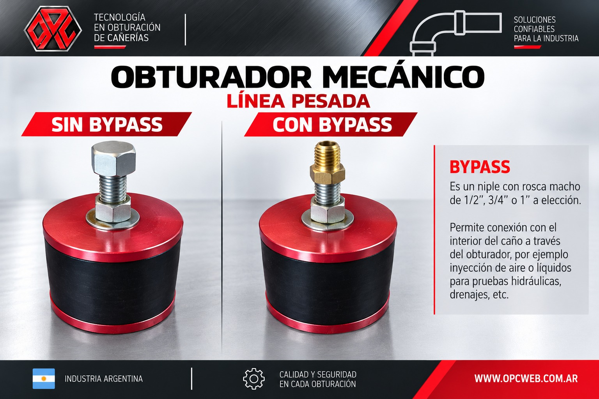
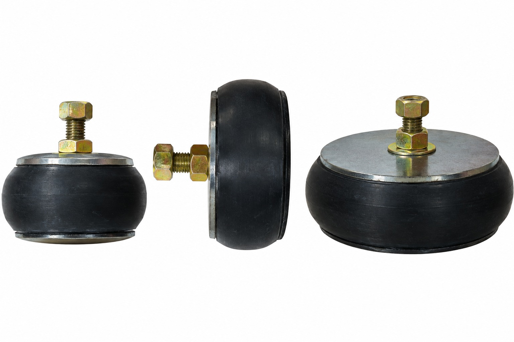
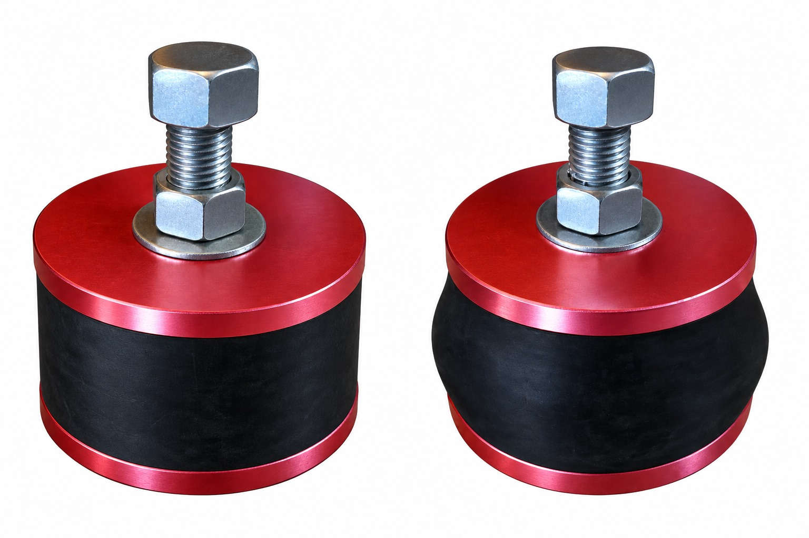

Obturación y aislamiento bajo presión, de Ø13 a Ø400 mm.
Diseñados para obturaciones temporales, aislamiento de canalizaciones y pruebas hidráulicas bajo presión durante trabajos de construcción, mantenimiento y reparación de redes de agua, cloacas, gas, combustibles y productos alimenticios.
Se fabrican con distintos tipos de caucho según la aplicación, y pueden incorporar sistema bypass para inyectar, conducir o aliviar aire y fluidos durante la intervención.
Línea liviana
Obturadores mecánicos de construcción liviana, pensados para aplicaciones de obturación temporal donde se prioriza un manejo ágil en obra.


Línea pesada
Obturadores mecánicos de construcción reforzada, diseñados para aplicaciones que requieren mayor resistencia y capacidad de soportar presión.


Sistema bypass
Ambas líneas —liviana y pesada— pueden incorporar sistema bypass según la aplicación. El bypass establece una conexión con el interior de la cañería para inyectar, conducir o aliviar aire y fluidos: se usa, entre otras aplicaciones, en pruebas hidráulicas, drenajes y control de presión.

